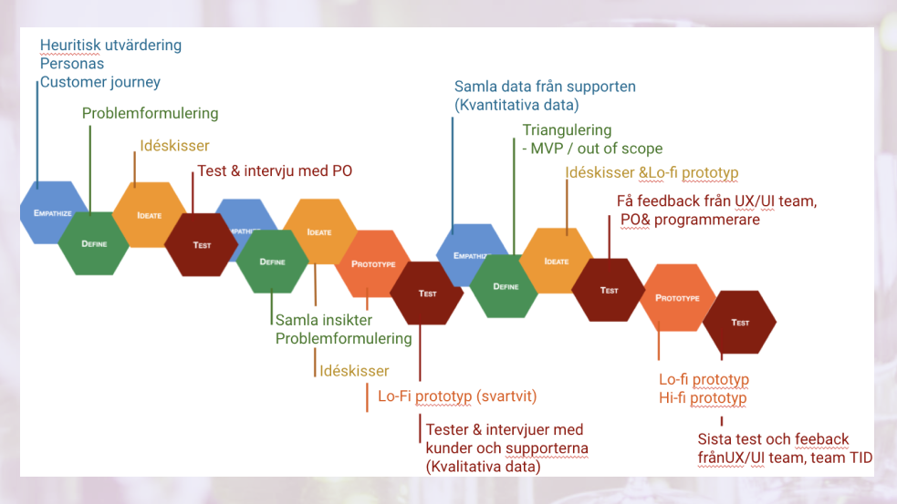
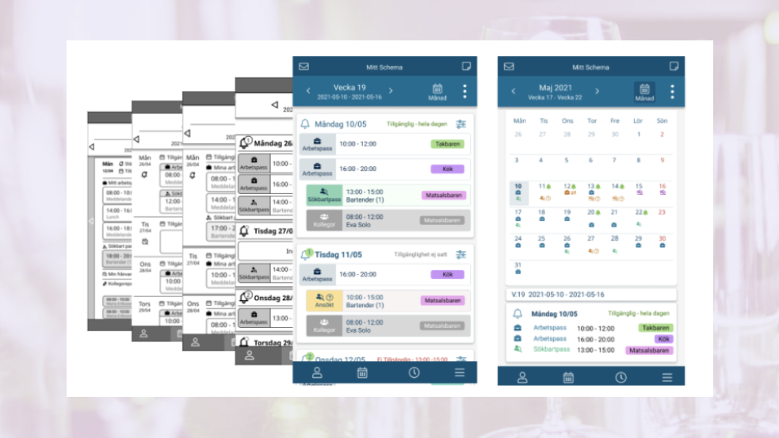

Design thinking iteration process

Image: work process
I iterated the Design thinking process around 4 times.
I empathized with users' problems in different ways and sketched ideas and defined MVP and ended up the Lo-fi wireframes, tested it with customers.
Then I identified new problems and sketched again.

Image: From wireframe to prototype